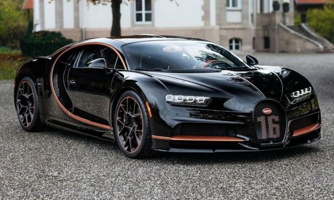
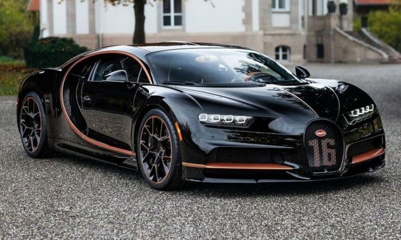

15 сентября 1881 года родился Этторе Бугатти. Основанная им компания просуществовала меньше полувека, а общий тираж выпущенных машин составил всего порядка 7800 экземпляров. Именно Bugatti многие называют самым легендарным из всех автомобильных брендов в истории. Окутанная мифами судьба фирмы накрепко связана с фигурой ее основателя — гениального, высокомерного и очень непростого человека.
Из новых марок, представленных на выставке, особенно хочется отметить Bedelia и Bugatti. Обе фирмы представили любопытные конструкции с кузовом, где водитель сидит позади пассажира. Этот короткий отрывок из отчета о Парижском автосалоне 1910 года, напечатанный в английском журнале Autocar, любопытен сразу по нескольким причинам. Для начала, это одно из первых, если не самое первое упоминание об автомобилях Bugatti в международной прессе. Но главное, что корреспондент уважаемого издания (к слову, Autocar издается и по сей день), как следует из его же заметки, до стенда Bugatti... так и не добрался. Иначе ему и в голову бы не пришло сравнивать, уж простите за прямоту, убогую Вedelia, в которой водитель действительно сидел позади пассажира, а тому, в свою очередь, приходилось переключать передачи, с изящной и весьма продвинутой в техническом отношении Bugatti Type 13.
Молодой, талантливый, красивый. На этом снимке Этторе Бугатти около 20 лет. Надо сказать, репортеру-недотепе еще сильно повезло, что его писанина не попала на глаза самому Этторе Бугатти. «Патрон», как уважительно и с легкой опаской называли его подчиненные, слыл человеком крутого нрава, а халтурщиков не переносил на дух. Гоночный 5-литровый Deutz, разработанный Этторе, одержал победу в пробеге на приз прусского принца Генриха Высокомерие и гипертрофированное чувство собственного достоинства вообще были свойственны семье Бугатти. Отец Этторе — Карло Бугатти — весьма известный и успешный краснодеревщик и серебряных дел мастер, занимался изготовлением эксклюзивной мебели и оформлением интерьеров на заказ. Карло держал небольшую мастерскую в Милане и надеялся, что его сыновья, Рембрандт и Этторе, пойдут по его стопам. Те не возражали.
Первый серийный автомобиль марки Bugatti — Typе 13 образца 1910 года. Этторе одно время посещал занятия миланской художественной школы, но вскоре понял, что Рембрандт, который был на три года младше, гораздо талантливее как художник и скульптор. Быть вторым? Ну уж нет, это удел неудачников. И Бугатти без сожаления забросил колледж, устроившись подмастерьем на велосипедную фабрику Prinetti & Stucchi. Будучи весьма обеспеченным молодым человеком, работал он не столько из-за денег, сколько из желания утолить собственную страсть к технике.Bugatti Type 23 представлял собой слегка модифицированную версию 13-й модели с более мощным мотором. На ней уже появился фирменный овальный радиатор, который станет отличительной чертой большинства последующих моделей марки
 
